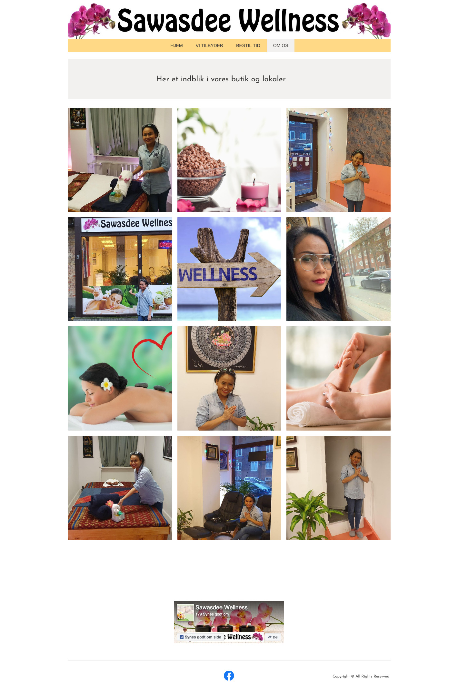
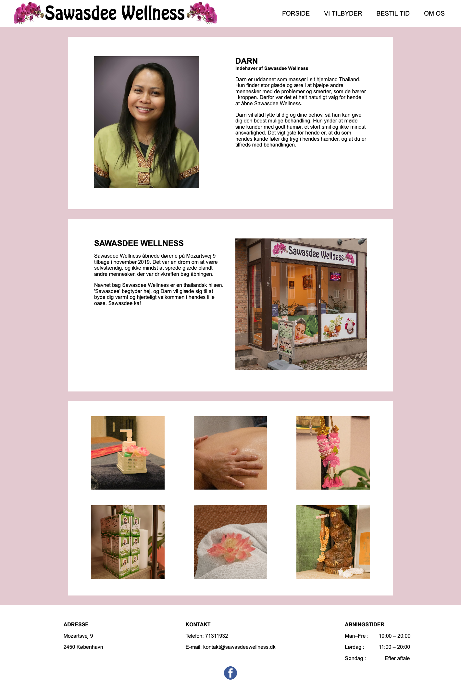

Tema 5 bestod af bl.a. et pilotprojekt og slutprojektet med redesign af et website. Dertil skulle der produceres indhold til det færdige site.
Min gruppe og jeg anvendte 5-sekunder-test og BERT-test til at fastlægge en målgruppe, samt at opsætte nyt wireframe og producere nyt indhold til siden. Ud fra tests valgte vi fx feminine farver, da virksomhedens kunder hovedsageligt består af kvinder.
Produktionen af det digitale indhold (både til pilot- og redesignprojektet) blev derudover planlagt ud fra bl.a. 5-skudsreglen, log-line og en interviewguide. Læren om støjreduktion og color grading viste sig især brugbar ifm. pilotprojektet pga. lyd- og lysforhold på location; udendørs tæt på en støjende vej og i mørk/dårlig belysning.
Besøg det redesignede website her.
Pilotprojektet:
Før:
Efter:
